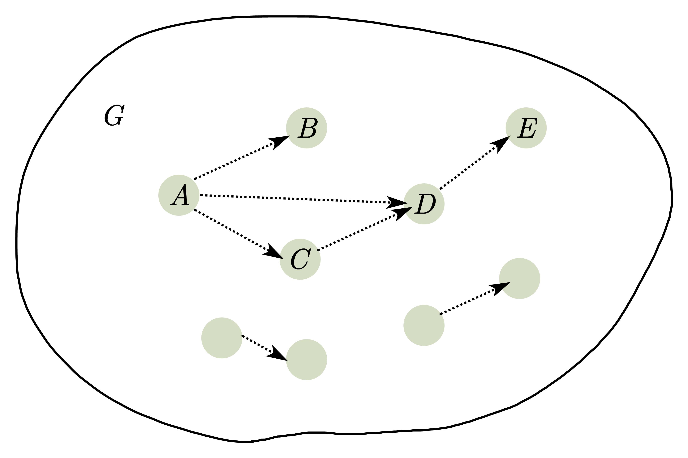

本章主要通过一些随机化的算法介绍了两个工具:
- 马尔可夫不等式(Markov Inequality)和切尔诺夫界(Chernoff Bound)
- 用代数的方法研究图论, 即随机游走
笔记中, 我们不会关注本章中讲的具体算法, 而是主要关注有关谱图论(spetral graph theory)的部分.
约定
- 在研究图$G$, 一般认为$G=(V,E)$, 其中$V,E$分别是点集和边集. 一般记为$|V|=n$, 图算法的复杂度也用有关$n$的函数来表示.
- 在本系列中, 如果向量(如$x$)出现在矩阵(如$M$)前面, 则$x$是行向量, 反之$x$为列向量. 记本文记号$xMx$相当于标准记号$\mathbf x^T\mathbf M\mathbf x$.
概率不等式
引理 Markov不等式
令$X$是一个飞负的随机变量, 则对于任意$\alpha>0$, 有 $$ \Pr[X\geq \alpha]\leq \frac{\operatorname E[X]}{\alpha} $$
Markov不等式的证明非常简单, 也显得非常粗略, 但是它对于推出Chernoff界已经足够了.
书中介绍的是广义的Chernoff界, 证明同伯努利分布的证明略有不同.
定理 Chernoff界
令$X_1,\cdots,X_t$是独立随机变量, 且都在$[0,1]$上取值, 令$X=(\sum_i X_i)/t$, 且$\mu=\operatorname{E}[X]$. 则有 $$ \Pr[|X-\mu|\geq \varepsilon]\leq 2\operatorname{exp}(-t\varepsilon^2/4) $$
Chernoff界在随机算法中的非常重要, 它使得我们可以重复一个随机算法多次, 以大多数次数的输出结果为最终结果, 使得我们计算正确的概率显著提高.
随机游走
伪随机性研究的一个重要工具就是谱图论. 它允许我们用代数的手段来研究图论. 谱图论中, 我们经常用到digraph和无向图:
- digraph: 即directed multigraph, 在有向图的基础上, 允许多重边的存在. 且允许点到自身的边(称为自回路, self-loop).
- 多重无向图: 在无向图的基础上, 允许多重边的存在, 且允自回路.
值得注意的是, 在随机游走的研究中, 我们认为点到自身的边只它贡献1度(degree). 这是由于我们需要用到$d$-正则(regular)图的概念:
- $d$-正则图: 即图中每条边的度都是$d$
我们经常需要将任意图补上若干自回路, 使其变成一个$d$-正则图. 如果按照一般的图论, 认为自回路为点贡献2度, 那么这样的操作就无法完成.
随机游走即从某个点出发, 然后在该点的边(如果digraph则为出边)中均匀随机选择一条, 完成一步移动. 并重复此过程. 这个过程虽然简单, 但是对它进行分析可以解决很大一类问题, 因此具有研究的价值(这里面已经诞生了非常多的哥德尔奖了).
我们可以将随机游走用一个矩阵来表示, 例如, 我们可以将下图
的随机游走矩阵表示为 $$ M=\left[ \begin{matrix} 1/4& 0& 3/4& 0\newline 0& 3/4& 0& 1/4\newline 3/4& 0& 0& 1/4\newline 0& 1/4& 1/4& 1/2\newline \end{matrix} \right] $$ 如果我们将某一步随机游走后, 在各点的概率表示成一个向量$x$, 那么$xM$就是在走一步之后的概率分布. 例如, 假设我们的从点$1$开始, 那么初始的分布就是$x=(1,0,0,0)$, 在经过一步游走后, 可以得到 $$ xM=(1/4,0,3/4,0) $$ 从图中也可以看出正确性. 该结论是比较容易证明的, 就不再赘述. 此外, 我们将均匀分布记作$u$, 即$u=(1/n,\cdots,1/n)$.
值得注意的是$M$是个非常特殊的矩阵, 具有一些平常不太引人注意的性质:
-
对于无向图来说, $M$是个实对称矩阵, 这意味着它可以被对角化, 且可以找到$\operatorname{rank} M$个正交的特征向量. 显然, 不同特征值的特征向量是正交的.
-
对于正则图来说, $M$的各列之和为$1$, 那么 $$ u M=u $$ 因此$u$是$M$的一个对应特征值$1$的特征向量.
对于无向正则图, $M$另外的一些特点不太显然, 都会在习题2.9中证明
- $M$的特征值的绝对值最大为$1$
- $M$有关特征值$1$的特征空间为$1\iff G$是连通图
- $M$有特征值$-1\iff G$是二部图
对于有向图$G$及其随机游走矩阵$M$的特点, 我们也有
对于$d$-正则有向图$G$, 以及其随机游走矩阵, 应该具有如下特点
-
$u$是$M$的一个对应特征值$1$的特征向量
-
$G$的每一个弱连通分支都是强连通的. 这是由于如果一个弱连通分支, 这个现象很有趣, 因此如果$G$的某一个弱连通分支, 按照DAG的方式, 将强连通分支排出来, 例如

其中虚线箭头代表从弱连通分支之间的多条边. 选择没有出边的分支(如图中$E$), 由于对于连通分支来说入度和出度也得相等, 因此$E$应该有指向其他分支的回向边, 例如指向$D$, 那么$E$和$D$就可以合成一个强连通分支. 依次这样进行下去, 那么所有的弱连通分支都可以合并为强连通分支.
从直观上来讲, 这一事实说明了其实对于有向正则图来说, 只要能从$i$走到$j$, 那么也应该能从$j$走回$i$, 说明用无向来研究有向的愿望是有可能能实现的.
习惯上, 我们喜欢将$M$的特征值按照绝对值从大到小排序, 且$\lambda_1=1$, 这样得到的$\lambda_1,\cdots,\lambda_n$称为图$G$的谱(spectrum).
定义
给定正规图$G$1, 对应随机游走$M$, 我们定义 $$ \lambda(G) \stackrel{\text { def }}{=} \max _{\pi} \frac{|\pi M-u|}{|\pi-u|}=\max _{x \perp u} \frac{|x M|}{|x|} $$ 其中, 第一个$\max$中$\pi$在所有概率分布中取, 第二个$\max$中$x$在所有垂直于$u$的向量中取. 我们记$\gamma(G)=1-\lambda(G)$.
上式中, 两个定义是相等的, 因为
- 对于任意$u$, 可以令$x=\pi-u$, 那么$x\perp u$.
- 对于任意$x\perp u$, 可以令$\pi=u+\alpha x$, 对于某些$\alpha$, $\pi$是概率分布.
根据习题2.9:
- $\lambda(G)\in [0,1]$
- $\lambda(G)=|\lambda_2|$
- $\gamma(G)=\lambda_1-|\lambda_2|$, 因此也被称作是谱鸿沟(spectral gap)2.
在正规图的连通图上随机游走, 我们容易想到的一个问题就是, 在游走到足够的步数后, 得到的分布会不会是接近均匀分布的? $\lambda(G)$能够帮助我们获得有关图的直接结论就是, $\lambda(G)$越小, 我们越是能够更快的逼近均匀分布, 有如下结论.
引理
令$G$是正规图, $M$是其随机游走矩阵, 对于任意初始分布$\pi$和$t\in\mathbb N$, 有 $$ \left|\pi M^{t}-u\right| \leq \lambda(G)^{t} \cdot|\pi-u| \leq \lambda(G)^{t} $$
现在我们运用上述引理证明, 在$t\geq\ln(n/\varepsilon)/\gamma(G)$时候, $\pi M^t$的最大的分量都至少有$1/n-(1-\gamma(G))^t$.
注意到
$$ \max|(\pi M^t-u)i|\leq \left|\pi M^t-u\right|\infty\leq \left|\pi M^t-u\right|\leq \lambda(G)^t $$
因此$|\pi M^t-u|\leq \lambda(G)^t$蕴含对于任意$i\in [n]$,
$$ |(\pi M^t-u)_i|\leq \lambda(G)^t \Rightarrow (\pi M^t)_i\geq 1/n-\lambda(G)^t $$
成立. 证明$1/n-(1-\gamma(G))^t\geq (1-\varepsilon)/n$等价于证明$\lambda(G)^t\leq \varepsilon/n$. 令$p = \ln (n/\varepsilon)$, 令$x=\lambda(G)$, 则
$$ \begin{align} \lambda(G)^t\leq \varepsilon/n \iff &x^{p/(1-x)}\leq e^{-p} \iff x\leq e^{x-1} \end{align} $$
紧接着用一些小技巧: 令$f(x)=x- e^{x-1}$, 则$f'(x)=1-(x-1)e^{x-1}$. 对于$0\leq x<1$, 有$f'(x)<0$. 因此对于$x\in[0,1]$, $f(x)\leq 0$. $\square$
UPATH问题
到此, 我们可以解决一个非常重要的问题, 即无向图点对连通性问题(UPATH问题).
UPATH问题
给定无向图$G$和其中的两个点$s,t$, 判定是否存在一条从$s$到$t$的通路.
显然, 深度优先搜索和宽度优先搜索都可以在多项式时间内解决这一问题, 而我们要考虑的是, 能否在对数空间内解决这一问题. 我们解决该问题用到的算法时随机的; 更加精确地讲, 我们想要证明$\mathsf{UPATH}\in\mathbf{RL} $.
根据谱图论的指示, 在连通的正规图中, 我们可以以多项式步的随机游走, 以极大的概率来触及到图中的每个点, 以这一思想设计出来的算法非常简单: 在图$G$中从$s$开始随机游走$\operatorname{poly}(n)$步, 当达到$t$时, 接受; 否则, 拒绝.
为了更好的描述这个问题, 我们定义一个图$G$的hitting time.
定义
给定图$G=(V,E)$, 定义其hitting time为 $$ \operatorname{hit}(G)=\max_{i,j\in V}\min\lbrace t: \Pr[从i开始经过t步随机游走到达过t]\geq 1/2\rbrace $$
简言之, 从任意点$i$开始, 经历$t$步随机游走后, 图上的任意点$j$被访问过的概率至少是$1/2$. 显然, 对于图$G$, 如果$\operatorname{hit}(G)=\operatorname{poly}(n)$, 那么进行多项式步随机游走, 就可以压倒性地概率遍及每一个点. 那么, 我们如果证明了任何一个连通图$G$的$\operatorname{hit}(G)$是多项式, 就可以证明我们给出的随机游走的$\mathsf{UPATH}$算法是正确的. 我们需要证明的是如下定理.
定理
给定任意连通的无向图$G$, 包含$n$个点, 其中点的最大的度为$d$, 则有$\operatorname{hit}(G)=O(d^2n^3 \log n)$.
任何一个给定的无向图, 我们都可以通过向其添加自回路, 使得该图变为一个$d$-正则或$(d+1)$-正则的非二部图. 而这一操作只可能增大图的hitting time(因为增大了每一步随机游走中, 停留在出发点的概率), 因此我们对正则非二部图证明上述结论就可以了, 详见习题2.9.
习题
习题实在是难, 没法一次性搞定, 只有慢慢更新.
Problem 2.1
证明采用归纳法.
命题对于$n=1$是成立的. 这是由于$f$的次数为$d$, 因此最多有$d$个根, 因此任意$S$中也不会包含$d$个以上的$f$的根, 因此随机选取到根的概率是大于$d/|S|$的.
对于归纳步骤, $$ f(x,\cdots,x_n)=\sum_{i=0} ^d x_{n}^if_i(x_1,\cdots,x_{n-1}) $$ 对于$f_i$来说由于次数最多为$d-i$, 有 $$ \Pr_{\alpha_1,\cdots,\alpha_{n-1}\gets S}[f_i(\alpha_1,\cdots,\alpha_{n-1})=0]\leq \frac{d-i}{|S|} $$ 由于$f$是非零多项式, 那么存在$i\in[d]$使得$f_i$不是零多项式. 令$f_k$为非零多项式满足$i>k$时$f_i$是零多项式(即$k$是最大的使得$f_k$不是零多项式的数), 记$\overrightarrow{\alpha_i}=(\alpha_1,\cdots,\alpha_i)$则 $$ \begin{align} \Pr[f(\overrightarrow{\alpha_n})=0]&=\Pr[f(\overrightarrow{\alpha_n})=0\wedge f_k(\overrightarrow{\alpha_k})=0]+\Pr[f(\overrightarrow{\alpha_n})=0\wedge f_k(\overrightarrow{\alpha_k})\neq 0] \newline &\leq \Pr[f_k(\overrightarrow{\alpha_k})=0]+\Pr[f(\overrightarrow{\alpha_n})=0\wedge f_k(\overrightarrow{\alpha_k})\neq 0] \end{align} $$ When $f_k(\overrightarrow{\alpha_k})\neq 0$, $f(\overrightarrow{\alpha_k},x_{k+1},\cdots,x_n)$ is a nonzero polynomial with degree as most $k$, then we have $$ \Pr[f(\overrightarrow{\alpha_n})=0]\leq \frac{d-k}{|S|}+\frac{k}{|S|}=\frac{d}{|S|} $$
Problem 2.2
给定$m$,
- 我们可以将每个均匀的$\alpha\in[m]$的低$\lfloor \log m\rfloor$位看作是这么多位的均匀随机比特.
- 同样, 我们有至少$1/2$的概率可以将$\lceil \log m\rceil$个随机比特看做是均匀随机的$\alpha\in[m]$, 且这个过程可以用一个高效的算法来完成.
Problem 2.3
-
对于任意$L\in \mathbf{RP}\cap \mathbf{coRP}$, 存在算法$\mathcal A_{b}$, 其中$b\in\lbrace 0,1\rbrace$, 使得$\mathcal A_b$在多项式时间内判定$L$, 且只有$b$-sided error. 那么对于任意的$x$, 我们同时用$\mathcal A_b$来计算它, 输出$1$如果$\mathcal A_0(x)=1$, 输出$0$如果$\mathcal A_1(x)=0$. 这两种情况是互斥的.
-
对于任意$L\in\mathbf{ZPP}$, 令$\mathcal A$是判定$L$的算法, 且对于任意$x\in L$, $\mathcal A(x)$在期望多项式时间$p(|x|)$停机并总是输出正确答案. 现构造算法$\mathcal B$: $\mathcal B$用$\mathcal A(x)$计算$2p$时间, 根据Markov不等式, 它有至少$1/2$的概率输出一个答案. 如果$\mathcal A$输出一个答案, 则$\mathcal B$输出$\mathcal A$的答案; 否则, 输出 $0$. 显然, $\mathcal B$在多项式时间内停机, 且$\mathcal B$只有one-sided error并且总是以至少$1/2$的概率在$x\in L$时输出$1$.
用类似的方法可以证明$L\in\mathbf{coRP}$.
Problem 2.4
(1) (做不出来, 查了资料)
(2) 给定多项式$p$, 我们选取随机数$N=\operatorname{poly}(|p|)$且使得$N/\deg d>c_1$完成检查($c_1$为某个常数). 需要注意的是, 由于打开括号可能使得中间或最终结果长度超过$\operatorname{poly}(|p|)$, 因此我们模$M$来完成测试, 即检查$p(N)\bmod M\equiv 0$是否成立, 来规避这一问题. 当$N$足够大时, 有对应的$c_2$, 使得 $$ \Pr[N\not\equiv 0 \bmod M]\geq c_2/\log\log N $$ 成立. 对于零多项式, 无论无何选取$N$和$M$, 由于$p(N)=0$, 就有$p(N)\bmod M=0$. 因此检验的结果始终为$0$. 对于非零多项式$d$次多项式, $\Pr[p(N)=0]<c_1$. 那么再模上$M$有 $$ \Pr[p(N)\bmod M=0]\leq c_1(1-c_2/\log\log N)<O(1)=c $$ 重复检验足够多的次数就可以满足$\mathbf{coRP}$的要求
Problem 2.5
这个问题和多项式次数小于域的阶数的区别在于, 可能存在作为多项式函数是零多项式, 但是作为多项式形式是非零多项式的那些特殊多项式. 如果对这些多项式带入随机数测试, 得到的永远都是$0$, 但是它却不是一个零多项式, 因此, 我们需要将其模到一个次数比较小的多项式来测试.
(1) (我感觉我方向想错了) 假设$f$可以分解为如下不可约多项式的乘积 $$ f=p_1^{e_1}\cdots p_n^{e_n} $$ 其中对于任意$i\neq j$有$p_i\neq p_j$. 那么它就应当有$\prod_{i=1}^n(e_i+1)$个不同的因子.
$f\bmod g\neq 0$当且仅当$g$是$f$的一个因子. 为了求$f\bmod g\neq 0$的概率的下界, 我们让$f$尽可能地有更多的次数在$d=c\log D$以下的因子, 即认为次数为$d$以下的不可约因子都是次数为$2$. 那么次数在$d$以下的因子总数就最多只有 $$ 2^{d/2}=2^{c\log D/2} $$ 而次数在$d$以下的多项式总数却有
Problem 2.6
(1) 用二项式定理展开 $$ (x+1)^n=x^n+C_n^1x^{n-1}+C_{n}^2x^{n-2}+\cdots+C_n^{n-1}x+1 $$ 其中, 当$n$为素数的时候$C_n^1,\cdots,C_n^{n-1}$都有一个约束$p$, 因此命题得证.
(2) 选取不同得$x$按照(1)中得方式来测试$n$. 如果对于每个$x$得选择都有$(x+1)^n\equiv x^n+1$, 那么就认为$n$是素数. 否则认为$n$是合数. (待续)
Problem 2.7
需要注意的是, 这个题目里面的$X$定义和Chernoff界定理中的不一样.
(1) 查了以下Moment Generating Function的性质, 便大概知道个所以然. 实际上, $M_X(r)=\operatorname E[e^{rX}]$, 如果$X$和$Y$相互独立, 显然有$M_{X+Y}(r)=M_X(r)M_Y(r)$. 利用这个性质: $$ \begin{align} \operatorname E[e^{rX}] &=\prod_{i=1}^t\operatorname E[e^{rX_i}]\leq \prod\operatorname E[1+rX_i+(rX_i)^2]\leq \prod (1+\operatorname E[{rX_i}+(r^2X_i^2)]) \newline &\leq \prod e^{r\operatorname E[X_i]+r^2\operatorname E[X_i^2]}\leq e^{r\operatorname E[X]+r^2t} \end{align} $$
最后一个不等式用到了$\operatorname E[X_i^2]\leq 1$.
(2) (还没做出来)根据(1)中结论, 有 $$ \begin{align} \Pr[X>\operatorname{E}[X]+t\varepsilon]=\Pr[e^{rX}\geq e^{r\operatorname{E}[X]+r^2t}e^{r\varepsilon t-r^2 t}]\leq \frac{\operatorname{E}[e^{rX}]}{e^{r\operatorname{E}[X]+r^2t}e^{r\varepsilon t-r^2 t}}\leq \operatorname{exp}(r^2t-r\varepsilon t) \end{align} $$ 如果$\varepsilon\leq 1$, 令$r=\varepsilon/2$就有$\Pr[X>\operatorname{E}[X]+t\varepsilon]\leq \operatorname{exp}(-\varepsilon^ 2t/4)$. 如果$\varepsilon>1$, ?.
另外一个方向的证明类似.
(3) Independence of $X_i$是在$1$中第一个等式成立的必要条件.
Problem 2.8
还没做出来.
Problem 2.9
(1) 假设$x$是$M$的特征向量(eigenvector), 考虑$x$中绝对值最大的一个值$x_i$, 由于$xM=\lambda x$对于某个$\lambda$成立, 那么 $$ \lambda x_i=\sum_j x_jM_{ji} $$ 由于所有的$M_{ji}$的和为$1$, 因此$| \lambda x_i|\leq \sum |x_j M_{ji}|\leq \sum |x_iM_{ji}|\leq |x_i|$. 因此有$\lambda\leq 1$.
(2) 如果$G$是不连通的, 那么它有多个连同分支. 考虑这一的分布$\pi_i$: 在第$i$个连同分至上为均匀分布, 在其他连通分支上为$0$, 那么$\pi_i$是$M$的特征值为$1$的特征向量. 对于不同的连通分支, 这些特征向量$\pi_i$是线性无关的.
考虑$x$使得$xM=x$, 令$x_i$是$x$中绝对值最大的分量. 由于$x_i=\sum_jx_jM_{ji}$, 因此$|x_i|\leq \sum_j|x_jM_{ji}|$, 由于所有$M_{ji}$的总和不会超过$1$, 因此如果$M_{ji}$非零, 那么$|x_j|$都需要和$x_i$一样大且符号相同. 因此, 在连通图中, 只能有$\pi$这个特征向量的特征值为$1$.
(3) 如果$G$是二分的(bipartite), 那么其随机游走矩阵有如下形式 $$ M=\left[ \begin{matrix} & A\newline A& \newline \end{matrix} \right] $$ 这是由于两个部分的点的个数相等(由于每个点的度一样, 那么每个部分的度之和一样). 现在将$\pi$分成长度相等的两部分, 即$\pi=(\pi',\pi')$ $$ \pi M=(\pi',\pi')\left[ \begin{matrix} & A\newline A& \newline \end{matrix} \right] = (\pi’A,\pi’A) = \pi = (\pi',\pi') $$ 因此$\pi'$是$A$的一个特征值为$1$的特征向量. 可以构造出$M$特征值为$-1$的特征向量$(\pi',-\pi')$.
令$x$是$M$特征值为$-1$的特征向量. 同样按照(2)的方式, 考虑$x$中绝对值最大的那个值$x_i$. 那么根据$|x_i|\leq \sum_j|x_jM_{ji}|$, 如果$M_{ji}$不为$0$, 那么$x_j=-x_i$. 这样, 用正负号就可以将图分为两部分.
(4)
(第一步, 证明$\lambda_2$等于等式左边)注意到 $$ \langle xM,x\rangle=(\alpha_1v_1+\cdots+\alpha_nv_n)M(\alpha_1v_1+\cdots+\alpha_nv_n) = \sum_{i\in[n]} \lambda_i|\alpha_i v_i|^2 $$ 其中$\lambda_i, v_i$是特征值和特征向量. 注意到$\sum_{i\in [n]}\alpha_i^2=1$, 那么当$x=v_2$时, 上式取最大值, 即 $$ \max_{x}\langle xM,x\rangle= \mu_2|v_2|=\mu_2 $$ 其中, $\mu_2$是$M$第二大的特征向量(没有绝对值), 而$v_2$是对应的特征向量. 上述证明中, 我们用到了$M$是个对称矩阵这一特点, 而对称矩阵的特征向量可以是正交的.
(第二步: 证明t中的等式成立) 定义有关$G$的矩阵$L$为 $$ L_{ij}=\begin{cases} 1-w(i,i)/d, &i=j\newline -w(i,j)/d, &i,j,,\text{are adjacent}\newline 0, &\mathrm{otherwise}\newline \end{cases} $$ 这个矩阵为图$G$的Laplacian, 其中$w(i,j)$为$i,j$节点之间的边数. 根据定义, 有$M=I-L$, 因此 $$ xMx=xIx-xLx=1-xLx $$ 注意到 $$ \begin{align} (xL)_i&=\sum_{j\in[n]}x_iL_{ji}=x_iL_{ii}+\sum_{j\neq i}x_iL_{ji} \newline &=x_i-w(i,i)x_i/d-\sum w(i,j)x_i/d \newline &= \frac1d\sum_{j\in[n]}w(i,j)(x_i-x_j) \end{align} $$ 这是由于$\sum_{j\in[n]}w(i,j)=d$. $$ \begin{align} xLx &=\frac1d\sum _{j\in[n]}w(i,j)(x_i-x_j)x_i \newline &= \frac1d\sum_{i\leq j} w(i,j)[(x_i-x_j)x_i+(x_j-x_i)x_j] \newline &= \frac1d\sum_{i\leq j}w(i,j)(x_i-x_j)^2 \end{align} $$ 此处, 我觉得书中符号的意思是$E$是允许重复元素的集合, 如果$(i,j)$之间有多条边, 那么就有多个$(i,j)$在$E$中, 因此 $$ xLx=\frac1d\sum_{(i,j)\in E}(x_i-x_j)^2 $$ 那么 $$ \langle xM,x\rangle=1-\frac1d\sum_{(i,j)\in E}(x_i-x_j)^2 $$ 便对每个$x\perp u$及$|x|=1$的$x$成立, 我们便证明了等式.
(第三步, 计算bound.) 根据作者的提示, 考虑$\lbrace -\alpha,\beta\rbrace^n$这样的点, 我选择带入特殊值. 例如, 选择$x$中一半是$1/n$, 另一半是$-1/n$, 那么 $$ xLx\leq\frac1d\cdot \frac{nd}2\cdot \left(\frac{1}n\right)^2=1/n=\frac1{\operatorname{poly}(n,d)} $$ (5) 我们可以对(4)中的计算都套上绝对值, 就有 $$ \max_{x}|\langle xM,x\rangle|=\left|1-\frac1d\sum_{(i,j)\in E}(x_i-x_j)^2\right|=\lambda_2|v_2| $$ 此时$v_2$是$\lambda_2$对应的特征向量.
在题设限子下, $|\lambda_2|\neq 1$, 那么就可以得出结论.
(6) 在research过程中找到了答案. 选一个这样的特殊的$x$: $|x_i|\geq \frac1{\sqrt n}$且$x_j=0$. 令$i$到$j$的路径为$i=i_1\to i_2\to i_3\to \cdots\to i_{m-1}\to i_m=j$, 那么 $$ \begin{align} \frac1{\sqrt m}&\leq |x_j-x_i| \newline &= \left|\sum_{i=k}^{m-1}(x_{i_k}-x_{i_{k+1}})]\right| \newline &\leq \sum_{i=k}^{m-1}|x_{i_k}-x_{i_{k+1}}| \newline &= \sum_{i=k}^{m-1} \sqrt{1} \cdot \sqrt{(x_{i_k}-x_{i_{k+1}})^2} \newline &\leq \sqrt{D}\sqrt{\sum_{i=k}^{m-1}(x_{i_k}-x_{i_{k+1}})^2} \newline &\leq \sqrt D \sqrt{\sum_{(i,j)\in E}(x_i-x_j)^2} \end{align} $$
其中, 倒数第二个不等式用了Cauchu-Schwarz不等式, 而$D$表示图$G$的直径. 根据上式有 $$ \gamma(G)\geq \frac{1}{nd}\frac 1D $$ 根据$D<nd$就可以得出$\gamma(G)\geq \frac1{n^2d^2}$即$\gamma(G)=\Omega\left(\frac1{n^2d^2}\right)$.
Problem 2.10
(1) 我们直接考虑直觉的最坏的情况(即下图)的hitting time:
如果这个图的hitting time都达不到题目中的要求, 那我也就不知道要如何构造出更大的$\operatorname{hit}(G)$了. 假设该图有$n+1$个点. 一次性通过$(n+1)/2$步前$n/2$个点走到终点, 就需要在后至少$n/3$步都向前走, 概率小于$2^{-n/3}$ (用$n/3$主要是为了避免$n$是奇数的问题). 假设从起点开始尝试走$t$个$(n+1)/2$步, 根据union bound, 那么$t\geq 2^{n/3}/2$才能以至少$1/2$的概率走到终点. 因此 $$ \operatorname{hit}(G)\geq 2^{n/3}/2 \cdot (n+1)/2 = 2^{\Omega(n)} $$ (2) 根据定义$\lambda(G) \stackrel{\text { def }}{=} \max _{x \perp u} \frac{|x M|}{|x|}$. 对于任意$x\perp u$, $$ |xM|^2=\langle xM,M^Tx\rangle=xMM^Tx\leq |xMM^T||x| $$ 因此$\left(\frac{|xM|}{|x|}\right)^2\leq \frac{|x MM^T|}{|x|}$. 而当$x$为$MM^T$中$\lambda_2$对应的特征向量时, $xMM^T=\lambda_2x$, 因此$xMM^Tx=\langle\lambda_2x,x\rangle=\lambda_2|x|^2=|xMM^T||x|$, 此时等号成立. 因此有$\lambda(G)=\sqrt{\lambda(G')}$.
(3) 实际上Eulerian digraph就是强连通的正则有向图. (待续)